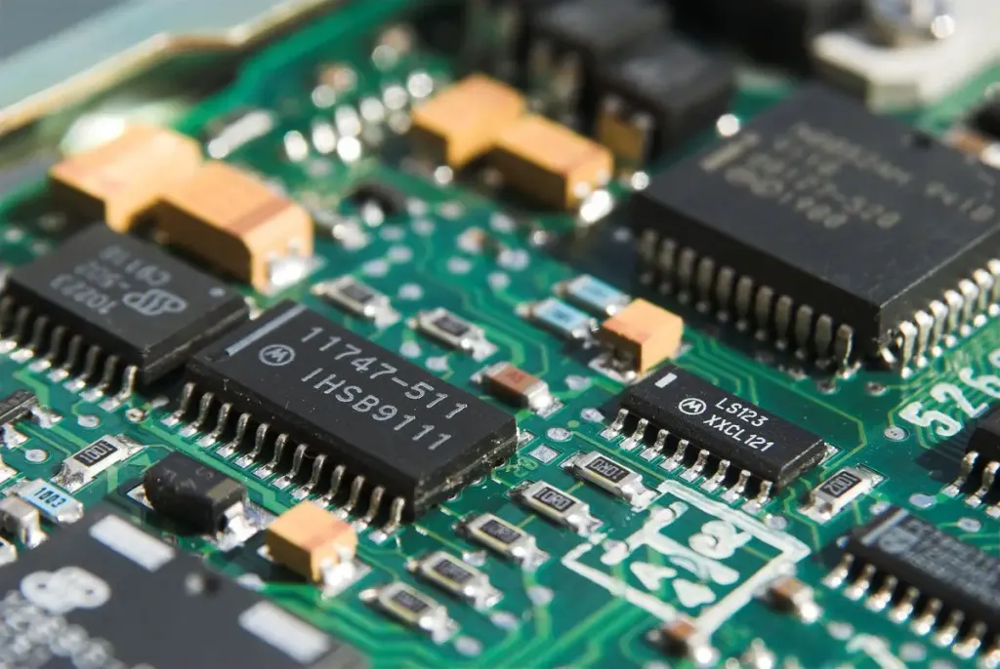

Firmware
¿Qué es el Firmware?
El firmware, también conocido como soporte lógico inalterable, es el programa básico que controla los circuitos electrónicos de cualquier dispositivo. Este programa o software es una porción de código encargada de controlar qué es lo que tiene que hacer el hardware de un dispositivo, y el que se asegura de que el funcionamiento básico es correcto.

Tú puedes tener varios circuitos conectados en el interior de tu dispositivo, pero esos circuitos necesitan una lógica primaria, unas instrucciones básicas que les digan cómo tienen que funcionar, cómo tienen que arrancar y qué operaciones tienen que realizar. Eso, simplificándolo para que se entienda, viene a ser lo que significa el firmware.
El código que compone el firmware de cualquier dispositivo suele venir en chips de memoria a parte de las principales. Esto quiere decir que desde tu ratón hasta tu lavadora, en todos los dispositivos hay una mínima memoria ROM en la que está almacenado este firmware. Gracias a él, también se establece una interfaz para la configuración del sistema y permite controlar el arranque y las conexiones y funciones principales del dispositivo.
El firmware puede ser calificado tanto como parte del hardware como del software de un dispositivo. Es parte del hardware porque siempre está integrado en la electrónica, pero no deja de ser un programa informático, por lo que también es software. Así pues, es prácticamente uno de los principales puntos de unión entre ambos.
El firmware siempre se encuentra en dispositivos de memoria no volátil, como puede ser memoria ROM, EPROM o memoria Flash. Si se encuentra en los primeros se necesitará cambiar al chip físicamente para sustituir el firmware o actualizarlo, mientras que si es memoria EPROM o Flash se podrá actualizar el firmware más fácilmente, como en el caso de los ordenadores en los que se puede hacer incluso desde el propio BIOS.
¿Para qué sirve el Firmware?
El firmware sirve para comunicarse con los dispositivos de hardware de un sistema, lo cual es necesario para el correcto funcionamiento de los niveles superiores de software. Todas las piezas "inteligentes" tienen un firmware, por lo que en sistemas complejos como un ordenador es común tener varios firmwares.
Por ejemplo, en un ordenador tienes el firmware de la placa base, el BIOS, que es el más conocido, pero otras piezas como el procesador, los discos duros o las tarjetas gráficas tienen también su propio firmware. Estos firmwares obviamente están a diferentes niveles y en el caso de un ordenador tenemos el BIOS como firmware “principal” que es el que se comunica, gestiona y configura los demás para que todo pueda funcionar de forma conjunta.
Luego aparte, para poder usar cualquier firmware necesitas un programa diseñado para comunicarse con él, de ahí que existan diferentes controladores o “drivers” en todas las máquinas para poder hacer funcionar de forma correcta los diferentes firmwares y por tanto los diferentes dispositivos. Muchas veces estos drivers son muy complejos como los de una tarjeta gráfica de última generación como las RTX 3000 de Nvidia, pero también hay controladores más sencillos que incluso hasta son universales para todos los dispositivos del mismo tipo.
El firmware también se puede usar o modificar para fines maliciosos haciendo que sea una de las formas más fáciles y efectivas de infectar un dispositivo, ya que al ser una pieza de software que se ejecuta a tan bajo nivel podrá actuar prácticamente sin limitaciones sobre todas las piezas del sistema y de forma que es muy difícil detectar y controlar las actividades que el firmware esté desarrollando en el dispositivo. Irónicamente, el firmware es una de las partes más difíciles de proteger, ya que al estar por debajo del sistema operativo es por ejemplo difícil que un antivirus convencional actúe sobre él.
¿Cómo se actualiza el firmware?
Con esto queremos decir que en el momento de actualizar cualquier tipo de firmware debes estar completamente seguro de que lo que vas a ejecutar es una actualización fiable y que se corresponde en todos los sentidos.
Esto es sumamente importante porque en el momento en el que nos equivoquemos y cambiemos el código por otro que no sea válido, lo más seguro es que dañemos el dispositivo y no arranque correctamente, llegando incluso en algún momento a bloquearlo de forma casi definitiva.
Sabiendo esto y teniendo la actualización precisa, es más que correcto ejecutarla, puesto que conseguirá que todo funcione mejor.
Dichas actualizaciones se consiguen en la web del fabricante o en programas internos preinstalados por la marca, que te informan del momento en el que se puede actualizar cada uno de los complementos del conjunto, incluyendo cuando tiene que actualizar el firmware.
Ahora ya conoces todas las bondades del firmware, para qué sirve y las maneras que tenemos de actualizarlo. Ya no será un desconocido para ti.
Autor: Youssef Alexander Khalifa Quispe
Conctacta conmigo